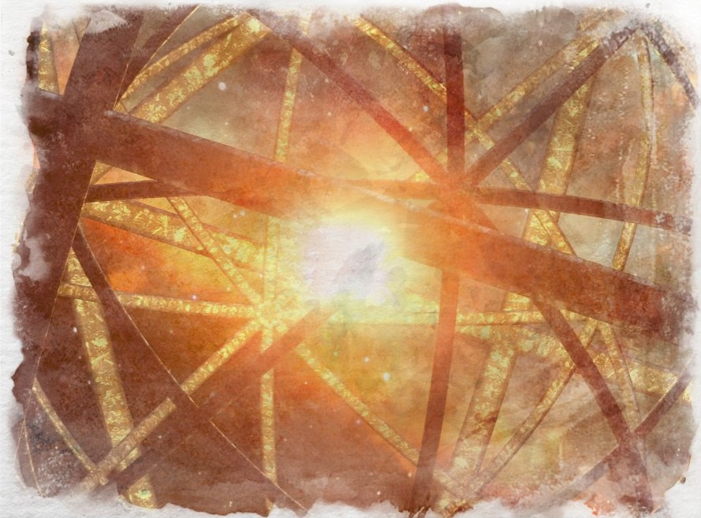

The Shrivatsa
The shrivatsa is an energy matrix in the form of a lattice sphere that encompasses the Aeon and its pocket dimensions, repelling the attacks of the Nu. However, the Nu can feed on the energy sent into the Shrivatsa via the atet, which forces it to require more and more power until the Aeon overloads it and purges the Shrivatsa’s energies rather than keep them building up, thus beginning the cycle anew. When this happens, some of the Nu can get inside the Shrivatsa but they are usually destroyed by the next atet dispersing energy into the lattice.
The shrivatsa purges its energy into the elemental spheres via the yggdrasils attached to its interior. The shrivatsa cannot be seen by mortal eyes save as a nebulaeic bloom of sorts at the point where the Atet disperse their energies.